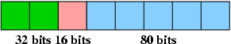
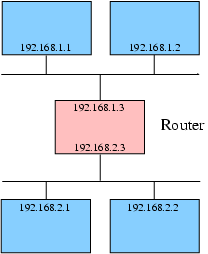

22.1. Аппаратное обеспечение
Сетевые карты
Драйверы для сетевых карт устанавливаются как модули ядра. Модуль для вашего
сетевого адаптера должен быть загружен во время инициализации Slackware Linux. В
большинстве систем сетевые карты автоматически определяются и настраиваются во
время установки операционной системы. Вы можете перенастроить сетевые адаптеры с
помощью команды netconfig, которая добавляет драйверы (модули) обнаруженных
устройств в файл /etc/rc.d/rc.netdevice.
Также возможно вручную настроить модули, которые должны загружаться во время
инициализации системы. Это можно сделать, добавив строку modprobe в файл
/etc/rc.modules. Например, если вы желаете загружать модуль для сетевого
адаптера 3Com 59x NICs (3c59x.o), добавьте следующую строку в
/etc/rc.d/rc.modules:
/sbin/modprobe 3c59x
Карты PCMCIA
Поддерживаемые PCMCIA-карты определяются автоматически программным обеспечением PCMCIA. Пакет pcmcia-cs из дискового набора «a» предоставляет возможность работать с картами PCMCIA в Slackware Linux.
22.2. Настройка интерфейсов
Сетевые карты доступны в Linux через так называемые «интерфейсы». Для отображения доступных интерфейсов может быть использована команда ifconfig:
- # ifconfig -a
eth0 Link encap:Ethernet HWaddr 00:20:AF:F6:D4:AD
inet addr:192.168.1.1 Bcast:192.168.1.255 Mask:255.255.255.0
UP BROADCAST RUNNING MULTICAST MTU:1500 Metric:1
RX packets:1301 errors:0 dropped:0 overruns:0 frame:0
TX packets:1529 errors:0 dropped:0 overruns:0 carier:0
collisions:1 txqueuelen:100
RX bytes:472116 (461.0 Kb) TX bytes:280355 (273.7 Kb)
Interrupt:10 Base address:0xdc00
lo Link encap:Local Loopback
inet addr:127.0.0.1 Mask:255.0.0.0
UP LOOPBACK RUNNING MTU:16436 Metric:1
RX packets:77 errors:0 dropped:0 overruns:0 frame:0
TX packets:77 errors:0 dropped:0 overruns:0 carrier:0
collisions:0 txqueuelen:0
RX bytes:8482 (8.2 Kb) TX bytes:8482 (8.2 Kb)
Сетевые карты имеют название ethN, где N -- это номер
от 0 и больше. В примере сверху, первая сетевая карта (eth0) уже получила
IP-адрес. Но у ненастроенного интерфейса IP-адреса не было бы, и
ifconfig не показал IP-адрес для ненастроенного интерфейса.
Интерфейсы могут быть настроены в файле /etc/rc.d/rc.inet1.conf. Вы
легко можете прочесть комментарии в файле и заполнить требуемую информацию.
Например:
# Config information for eth0: IPADDR[0]="192.168.1.1" NETMASK[0]="255.255.255.0" USE_DHCP[0]="" DHCP_HOSTNAME[0]=""
В этом примере первому интерфейсу ethernet (eth0) присвоен
IP-адрес 192.168.1.1 и маска подсети 255.255.255.0. Если вы используете
DHCP-сервер, вы можете изменить строку USE_DHCP="" на
USE_DHCP[n]="yes" (заменив n на номер интерфейса). Если
включено использование DHCP, все параметры, кроме DHCP_HOSTNAME,
игнорируются. Например:
IPADDR[1]="" NETMASK[1]="" USE_DHCP[1]="yes" DHCP_HOSTNAME[1]=""
Точно так же настраиваются другие интерфейсы. Вы можете активировать настройки с помощью перезагрузки системы или выполнив /etc/rc.d/rc.inet1. Также возможно перенастроить только один интерфейс, выполнив /etc/rc.d/rc.inet1 ethN_restart, где ethN нужно заменить на название изменённого интерфейса.
22.3. Настройка интерфейсов (IPv6)
22.3.1. Введение
IPv6 – это интернет-протокол следующего поколения. Одно из преимуществ этого протокола – гораздо большее пространство адресов. В IPv4 (интернет-протокол, используемый сейчас в большинстве случаев) используются 32-битные адреса, поэтому к настоящему времени большая часть адресного пространства занята и его уже не хватает. IPv6 использует 128-битные адреса, что даёт невообразимое адресное пространство (2^128 адресов). Нотация IPv6 отличается от IPv4, главным образом тем, что все числа указываются в шестнадцатиричной системе счисления вместо десятичной, и адреса записываются парами в 16 бит, разделёнными двоеточиями («:»). Давайте рассмотрим пример адреса:
fec0:ffff:a300:2312:0:0:0:1
Блок нулей может быть заменён двумя двоеточиями («::»). Так, приведённый выше адрес может быть записан следующим образом:
fec0:ffff:a300:2312::1
Каждый IPv6-адрес имеет префикс. Обычно он состоит из двух элементов: 32 бит, идентифицирующих адресное пространство, и 16-битного номера, описывающего сеть. В этом случае длина префикса равна 32 + 16 = 48 бит. Таким образом, если вы используете префикс /48, вы можете создать 2^16 подсетей с 2^80 хостами в каждой. Следующее изображение показывает структуру адреса IPv6 с 48-битным префиксом:
Изображение 22.1. Анатомия адреса IPv6

Несколько специальных наиболее часто включаемых зарезирвированных префиксов:
Таблица 22.1. Важные префиксы IPv6
| Префикс | Описание |
|---|---|
| fe80:: | Link-Local Address — адреса сети, которые предназначены только для коммуникаций в пределах одного сегмента местной сети или магистральной линии. |
| fec0:: | Site-Local Address, предназначенный для коммуникаций в пределах локальной сети, но без связи с сетью Интернет. |
| 2002:: | 6to4, используется для передачи пакетов между IPv4 и IPv6. |
22.3.2. Поддержка IPv6 в Slackware Linux
Скомпилированное ядро Linux, входящее в Slackware Linux, по умолчанию не поддерживает IPv6, но поддержка вынесена в модуль ядра, который можно загрузить с помощью modprobe:
- # modprobe ipv6
Вы можете проверить, корректно ли загрузилась поддержка IPv6, просмотрев сообщения ядра командой dmesg:
- $ dmesg
- [..]
- IPv6 v0.8 for NET4.0
Включение IPv6 при загрузке ОС может быть настроено добавлением следующей
строки в файл /etc/rc.d/rc.modules:
/sbin/modprobe ipv6
Интерфейсы могут быть настроены командой ifconfig. Но
рекомендуется настраивать IPv6 с помощью команды ip, которая
является частью пакета «iputils», расположенного в директории
extra/ на носителе с дистрибутивом Slackware Linux.
22.3.3. Добавление адреса IPv6 к интерфейсу
Если в сети имеются объявленные маршрутизаторы, то существует вероятность, что интерфейсам уже были назначены IPv6-адреса, когда был загружен модуль ядра для поддержки IPv6. В противном случае адреса могут быть добавилены с помощью утилиты ip. Предположим, что нам нужно добавить адрес fec0:0:0:bebe::1 с префиксом длиной 64 бита (подразумевается, что fec0:0:0:bebe является префиксом). Это можно сделать с помощью следующей команды:
- # ip -6 addr add <ip6addr>/<prefixlen> dev <device>
Например:
- # ip -6 addr add fec0:0:0:bebe::1/64 dev eth0
22.4. Беспроводные интерфейсы
Беспроводные интерфейсы обычно требуют дополнительной настройки, например,
установки ESSID, WEP-ключей и режима работы. Настройки
интерфейсов указываются в конфигурационном файле
/etc/rc.d/rc.wireless.conf. Настройки делаются для каждого
MAC-адреса. По умолчанию в файле содержится секция, настраивающая любой
интерфейс:
## NOTE : Comment out the following five lines
## to activate the samples below ...
## --------- START SECTION TO REMOVE -----------
## Pick up any Access Point, should work on most 802.11 cards
*)
INFO="Any ESSID"
ESSID="any"
;;
## ---------- END SECTION TO REMOVE ------------
Удалить эту секцию и настроить каждый интерфейс по отдельности -- хорошая идея. Если у вас только один интерфейс, и вы достаточно ленивы, вы можете оставить эту секцию и добавить дополнительные требуемые параметры. Так как эти настройки относятся ко всем интерфейсам, ваша сетевая карта также будет настроена.
Вы можете добавить секцию, описывающую беспроводной интерфейс, в следующем формате:
<MAC address>)
<settings>
;;
Вы можете найти MAC-адрес в выводе команды ifconfig. Например, если беспроводная карта имеет наименование eth1, вы можете определить MAC-адрес следующим образом:
- # ifconfig eth1
eth1 Link encap:Ethernet HWaddr 00:01:F4:EC:A5:32
inet addr:192.168.2.2 Bcast:192.168.2.255 Mask:255.255.255.0
UP BROADCAST RUNNING MULTICAST MTU:1500 Metric:1
RX packets:0 errors:0 dropped:0 overruns:0 frame:0
TX packets:4 errors:1 dropped:0 overruns:0 carrier:0
collisions:0 txqueuelen:1000
RX bytes:0 (0.0 b) TX bytes:504 (504.0 b)
Interrupt:5 Base address:0x100
Шестнадцатиричное число, указанное после строки «HWaddr» -- это
MAC-адрес, в данном примере 00:01:F4:EC:A5:32. Когда вы определите MAC-адрес
интерфейса, вы можете добавить секцию устройства в файл
/etc/rc.d/rc.wireless.conf. Например:
00:01:F4:EC:A5:32)
INFO="Cabletron Roamabout WLAN NIC"
ESSID="home"
CHANNEL="8"
MODE="Managed"
KEY="1234-5678-AB"
;;
Это настроит интерфейс с MAC-адресом 00:01:F4:EC:A5:32 на использование ESSID
«home», работу на 8-м канале в режиме
«Managed». В качестве ключа для WEP-шифрования указан
1234-5678-AB. Возможно установить и другие параметры. Обзор всех
опций указан в последнем примере в файле rc.wireless.conf.
После настройки беспроводного интерфейса, вы можете активировать изменения, выполнив сценарий инициализации сети /etc/rc.d/rc.inet1. Вы можете увидеть текущие настройки, выполнив команду iwconfig:
- # iwconfig
eth1 IEEE 802.11-DS ESSID:"home" Nickname:"HERMES I"
Mode:Managed Frequency:2.447 GHz
Access Point: 02:20:6B:75:0C:56
Bit Rate:2 Mb/s Tx-Power=15 dBm Sensitivity:1/3
Retry limit:4 RTS thr:off Fragment thr:off
Encryption key:1234-5678-AB
Power Management:off
Link Quality=0/92 Signal level=134/153 Noise level=134/153
Rx invalid nwid:0 Rx invalid crypt:0 Rx invalid frag:0
Tx excessive retries:27 Invalid misc:0 Missed beacon:0
22.5. Разрешение имён
Имя хоста
Каждый компьютер в интернете имеет имя. Даже если у вас нет имени хоста, которое
можно разрешить с помощью DNS, всё равно будет хорошей идеей настроить его, т.к.
оно используется некоторым программным обеспечением. Вы можете настроить имя
хоста в файле /etc/hostname. Одной строки с именем компьютера будет
достаточно. В общем случае имя формируется следующим образом:
host.domain.tld, например, darkstar.slackfans.org. Знайте,
что имя хоста должно быть разрешаемо, что означает, что системы GNU/Linux должны
смочь преобразовать имя компьютера в IP-адрес. Вы можете убедиться, что имя
разрешаемо, добавив его в файл /etc/hosts. Прочтите следующий
раздел для получения большей информации об этом файле.
/etc/hosts
/etc/hosts – это таблица IP-адресов и ассоциированных с
ними имён. Этот файл может быть использован для наименования компьютеров
небольшой сети. Давайте рассмотрим пример файла /etc/hosts:
127.0.0.1 localhost 192.168.1.1 tazzy.slackfans.org tazzy 192.168.1.169 flux.slackfans.org
Строка localhost всегда должна присутствовать, она привязывает имя localhost к специальному интерфейсу, loopback (петля). В этом примере имена tazzy.slackfans.org и tazzy относятся к IP-адресу 192.168.1.1, а имя flux.slackfans.org -- к IP-адресу 192.168.1.169. На системе с таким файлом оба компьютера будут доступны через указанные имена.
Также возможно добавить адреса версии IPv6, которые будут использоваться, если
ваша система настроена на IPv6. Вот пример /etc/hosts с записями
IPv4 и IPv6:
# IPv4 entries 127.0.0.1 localhost 192.168.1.1 tazzy.slackfans.org tazzy 192.168.1.169 gideon.slackfans.org # IPv6 entries ::1 localhost fec0:0:0:bebe::2 flux.slackfans.org
Отметим, что ::1 -- это стандартный loopback-интерфейс IPv6.
/etc/resolv.conf
Файл /etc/resolv.conf используется для указания сервера имён.
Сервер имён преобразовывает имена хостов в IP-адреса. Ваш провайдер должен дать
вам два имени серверов имён (DNS-серверов). Вы можете добавить эту информацию в
файл /etc/resolv.conf. Например:
nameserver 192.168.1.1 nameserver 192.168.1.169
Вы можете проверить, корректно ли транслируются имена компьютеров, с помощью команды hostname. Измените имя хоста на имя существующего компьютера, например, web-сайт вашего интернет-провайдера.
22.6. Перенаправление IPv4
С помощью перенаправления IPv4, передавая пакеты, посланные на определённый интерфейс, другому интерфейсу, можно объединить две и более сетей. Это позволяет устройству под управлением GNU/Linux работать в качестве роутера. Например, вы можете объединить различные сети или вашу домашнюю сеть с сетью Интернет. Давайте рассмотрим пример:
Изображение 22.2. Пример маршрута

В этом примере имеется две подсети, 192.168.1.0 и 192.168.2.0. Три хоста присоединены к обеим сетям. Один из хостов подключен к обеим сетям через интерфейсы. Интерфейс на 192.168.1.0 имеет IP-адрес 192.168.1.3, на 192.168.2.0 – 192.168.2.3. Если хост действует как роутер между обеими сетями, он направляет пакеты подсети 192.168.1.0 в подсеть 192.168.2.0 и наоборот.
Перенаправление IPv4 в Slackware Linux может быть влючено или выключено при
помощи переключения бита исполнимости файла /etc/rc.d/rc.ip_forward. Если
установлен бит исполнимости, IPv4-форвардинг будет включаться при каждой
загрузке системы. Вы можете проверить исполнимость файла с помощью команды
ls -l (описание команды ls можно найти в
Части 8.2.1).
Также возможно включить перенаправление IPv4 в уже работающей системе без перезагрузки с помощью следующей команды (0 отключает перенаправление, 1 включает):
- # echo 0 > /proc/sys/net/ipv4/ip_forward
Будьте осмотрительны! По умолчанию нет никаких активных фильтров пакетов. Это означает, что каждый сможет получить доступ к другим сетям. Трафик может быть отфильтрован и логирован при помощи фильтра пакетов iptables. Iptables может быть настроен с помощью одноимённой команды. NAT также является частью iptables и может управляться и настраиваться с помощью команды iptables. NAT делает возможным «скрыть» сеть за одним IP-адресом. Это позволит вам организовать доступ к интернету для всей сети, но только под одним IP-адресом.